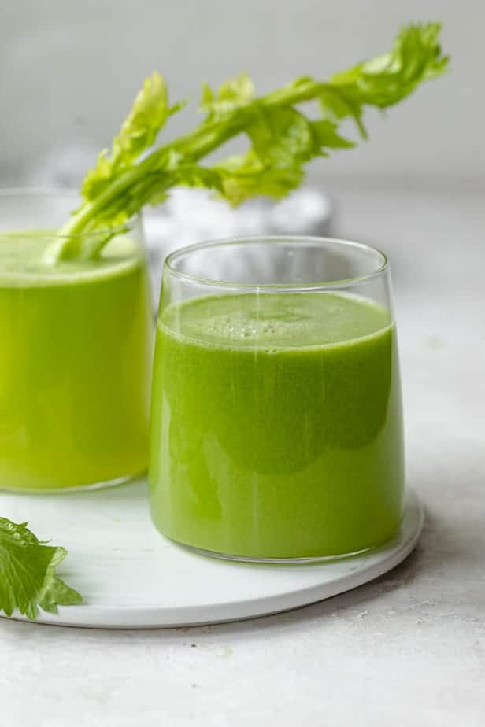

Celery Juice Recipe

Description
The most mouth-watering juice recipe this side of Milwakee
Giddy Up!!
Ingredients
- 1 large bunch celery
- Juicer
- 3 green apples (optional)
Steps
- Rinse the celery thoroughly, making sure to rub your fingers along the surfaces of the stalk on the inside and outside.
- Place the celery stalks along with the leaves through the juicer. If you're using additional fruits like apple, you can alternate between the celery and apples for best taste and consistency. You should get between 16 and 20 ounces.
- Drink immediately for best results.
Back to Main Page